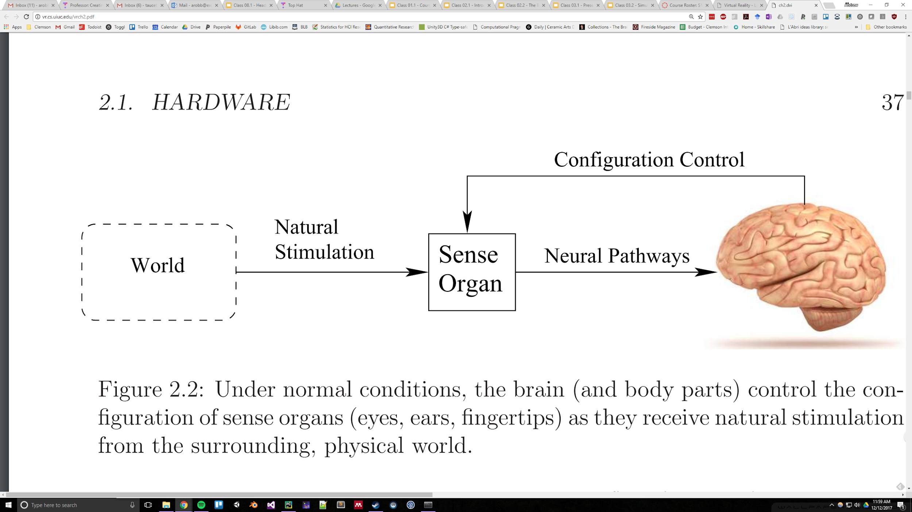
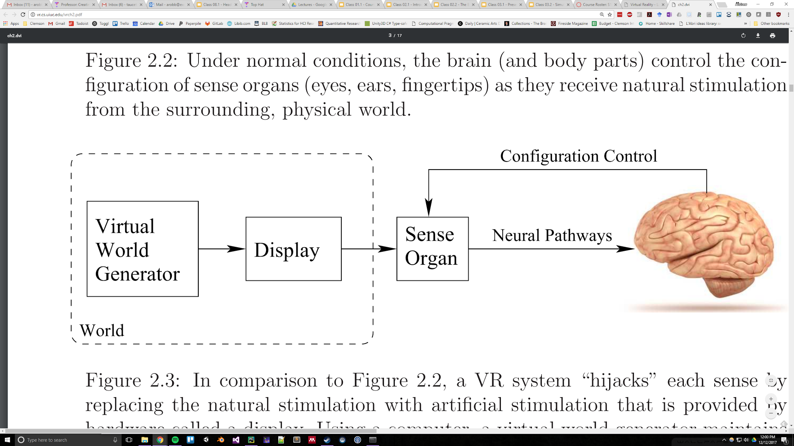
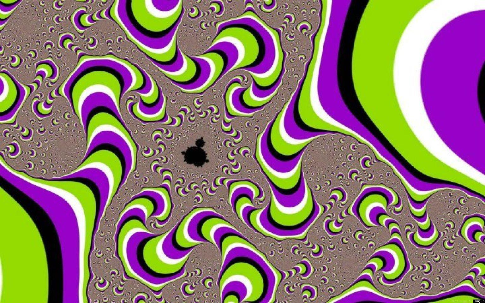
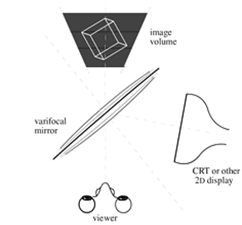
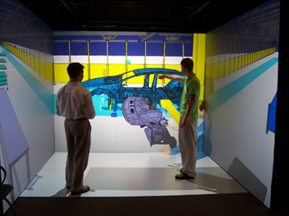
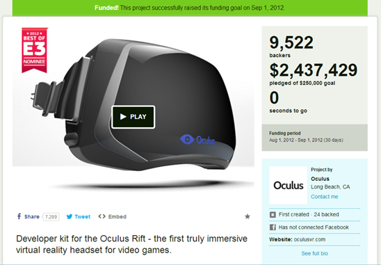

Four Key Components
From LaValle's VR textbook
- Organism — VR only exists if someone perceives it
- Targeted Behavior — Designed experience
- Artificial Sensory Stimulation — Synthetic sensory input
- Awareness — Feeling present in the virtual world
The Fifth Component
- Organism — VR only exists if someone perceives it
- Targeted Behavior — Designed experience
- Artificial Sensory Stimulation — Synthetic sensory input
- Awareness — Feeling present in the virtual world
Interactivity — The user not only perceives but also acts
Another Name for VR
Perception Engineering
Perceiving the Real World
The brain receives natural stimulation from the physical world
The Perception-Action Loop
Roger Sperry: Perception and action are the fundamental logic of the nervous system
Perceiving the Virtual World
The VR Loop
- Virtual World Generator creates content
- Display presents to sense organs
- Brain processes stimulation
- User acts via body
- Sensors capture input
- Loop continues...
The Real World Underneath
The physical world influences everything in the VR loop:
- Physical comfort affects experience
- Real-world sounds can break immersion
- Body position matters
- Safety concerns persist
A Philosophical Question
If a HMD is on in the forest and no one sees it, is it really VR?
VR only has meaning if an organism perceives it
What Is Perception?
The process by which we gain knowledge of the world around us through our senses
But also influenced by:
- Learning and memory
- Expectations
- Attention
Perception Is Limited
- We don't perceive everything around us
- What we perceive is constrained by our senses
- Our senses have peculiarities we can exploit
Optical Illusions
Your brain perceives motion that isn't there
Inattentional Blindness
We miss things right in front of us when focused elsewhere
Famous example: The invisible gorilla experiment
Cross-Modal Illusions
Visual-auditory interactions can create phantom sounds
"vEAR" — Visually-Evoked Auditory Response
Two Design Goals
Prevent Bad Experiences
Account for perceptual limitations
Create Better Experiences
Leverage perceptual peculiarities
Preventing Bad Experiences
VR Sickness
Caused by conflict between sensory systems
Solution: Minimize sensory conflict
Leveraging Perception
- Basic: Only need enough pixels for ~20/20 vision
- Better: Foveated rendering — exploit the fovea
- Best: Redirected walking, change blindness, impossible spaces
All build on peculiarities of our perceptual systems
The Gartner Hype Cycle
Technology adoption follows predictable patterns
Early Milestones
- 1838: First 3D Displays
- 1929: Link Flight Simulator
- 1946: First computer (ENIAC)
- 1956: Sensorama
- 1960: Heilig's HMD
- 1968: Sword of Damocles
Early flight simulation
The Sword of Damocles (1968)
Ivan Sutherland's pioneering HMD
- First modern VR device
- Head tracking
- Stereoscopic 3D
- Live computer graphics
The VR Boom
- 1985: VPL Founded (coined "VR")
- 1986: Super Cockpit
- 1987: Scientific American article
- 1992: CAVE system
- 1995: IEEE VR conference
- 1995: Virtual Boy
Jaron Lanier, VPL founder
The CAVE (1992)
Cave Automatic Virtual Environment — room-scale projection VR
Virtual Boy (1995)
First consumer "VR" device
- Monochrome red display
- No head tracking
- Commercial failure
- But important milestone
VR in 2010: The Problem
| Model | FOV | Price | $/Degree |
|---|---|---|---|
| SX100 | 100° | $65,000 | $650 |
| xSight | 123° | $39,000 | $317 |
| Wide 5 | 150° | $45,000 | $300 |
| Z800 | 40° | $1,800 | $45 |
| HMZ-T1 | 45° | $800 | $18 |
Good VR was prohibitively expensive
Field of View Matters
45° FOV

150° FOV
The Smartphone Revolution
- 2011: LEEP Smartphone Display
- 2012: FOV2GO prototype
- 2012: Oculus Kickstarter
- 2014: Google Cardboard
- 2015: Samsung Gear VR
- 2016: Consumer VR arrives!
Cheap smartphone displays enabled affordable VR
Oculus Kickstarter (2012)
Raised $1 million in three days — VR for the masses
Google Cardboard (2014)
Democratizing VR with cardboard and smartphones
2016: Consumer VR Arrives
Oculus Rift CV1 • HTC Vive • PlayStation VR • Daydream
The first high-quality consumer VR devices
VR Today: The Transformation
| Model | FOV | Price | $/Degree |
|---|---|---|---|
| SX100 (2010) | 100° | $65,000 | $650 |
| Wide 5 (2010) | 150° | $45,000 | $300 |
| Quest 2 (2020) | 104° | $400 | ~$4 |
100x improvement in price/performance!
Key Takeaways
- VR is perception engineering
- Human perception constrains and enables VR design
- The technology has finally caught up with the vision
- Understanding perception is key to creating good VR
Coming Up
- Deep dive into human visual perception
- Understanding presence and immersion
- VR sickness: causes and solutions